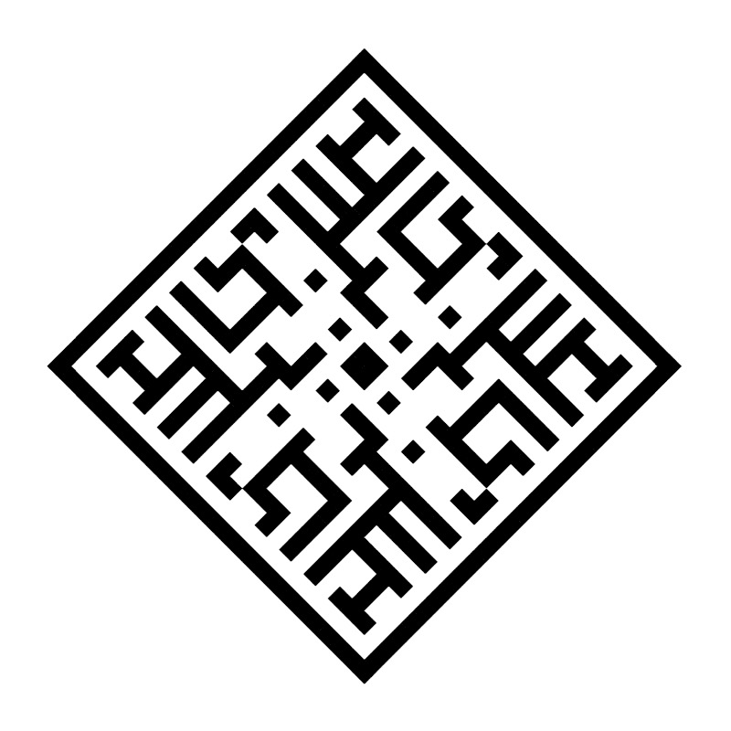

Rushnyky
Rushnyky are ritual cryptograms appearing in traditional eastern slavic symbology, used as binding amulets or magic talismans. They bear eye-catching symmetries and are frequently embroidered on cloths or towels in bright red thread. I created a program inspired by the Rushnyky, to automatically generate nearly endless patterns at the press of a button. Their resemblance to true Rushnyky is merely aesthetic, but it's also intriguing to think of what unknown spellwork might be contained in a talisman that human eyes have never seen before. The shape generating algorithm is differentiated from pure noise by the inclusion of three kinds of symmetry, and a preference for distinct, continuous paths.